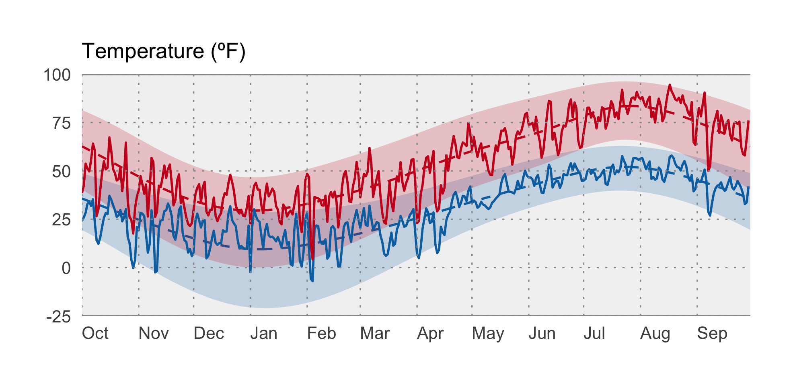
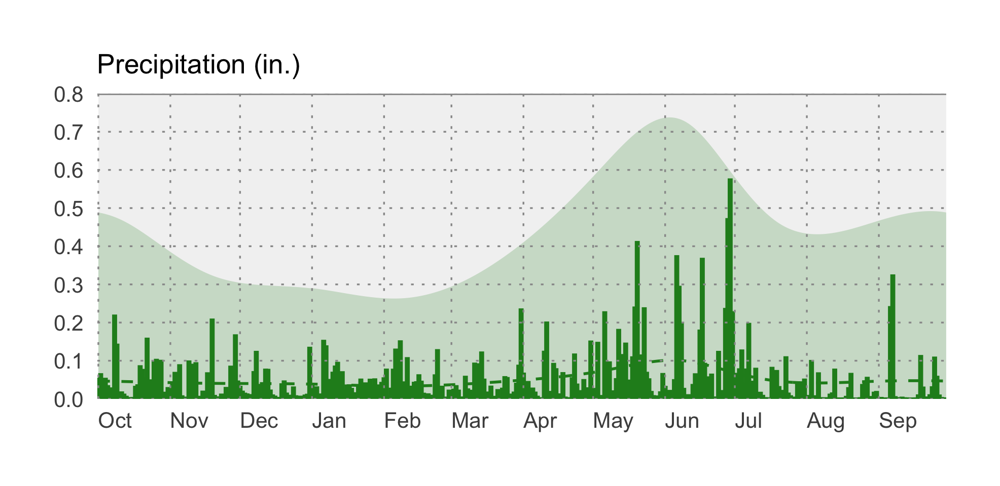
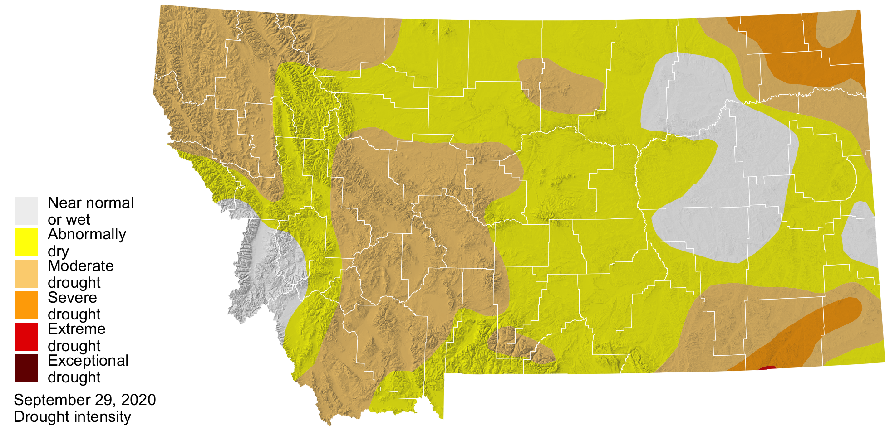

Summer 2020 Review
A major grasshopper infestation affected crops across eastern Montana. Population and impacts of pests like grasshoppers are closely tied to climate conditions. Photo: Gillette News Record.
 Temperature
Temperature
After a July of near-normal temperatures, August brought the heat, leading to above-normal temperatures across Montana as a whole. Portions of western Montana were 3 ºF above normal, and the western Crazy mountains north of Livingston were 2 ºF above normal Northeastern Montana had slightly cooler than normal temperatures throughout the summer.
The graph below compares historical daily temperatures (shaded bands and dashed lines) to current daily temperatures so far in 2020 (solid-jagged lines) across Montana. The shaded bands represent the range of recorded temperatures during the 1981–2010 period on any given day. The red bands and lines represent the high temperatures and the blues bands and lines represent the lows. The dashed red and blue lines represent the average high and average low temperatures during the 1981–2010 period.

 Precipitation
Precipitation
Dry conditions continued across the state. For example, the Crazy mountains received only about 30% of its normal summer precipitation, and the Highwood mountains east of Great Falls received only about 25% of its normal precipitation. Persistent below-normal precipitation across Montana continues to be the primary driver of ongoing drought conditions.
The graph below compares historical daily precipitation (shaded band and dashed line) to current daily precipitation so far in 2020 (vertical bars) across Montana. The shaded band represent the range of recorded precipitation during the 1981–2010 period on any given day. The dashed line represents the average precipitation during the 1981–2010 period.

 Soil Moisture
Soil Moisture
While satellite-derived estimates of soil moisture for Western Montana continue to be very low, conditions in central and northern Montana have improved as we head into the fall. Soil moisture in northeastern Montana also remains low. Given the climate outlook for the winter, which includes wetter than normal conditions, soil moisture conditions should continue to improve across the state if early rainfall and snowmelt recharge soils prior to the winter freeze up.
 Drought
Drought

According to the US Drought Monitor (USDM), drought and abnormally dry conditions expanded across Montana during late summer. Much of western Montana has moderate drought conditions, and portions of northeastern and southeastern Montana are experiencing severe drought. Warmer than normal conditions during early fall have delayed drought recovery, but a moderate La Niña should bring wetter conditions as we head into the winter.